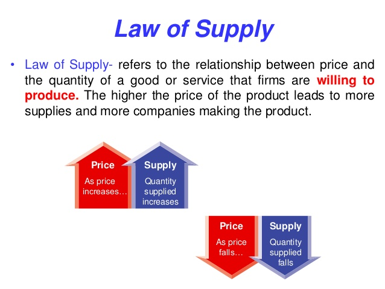
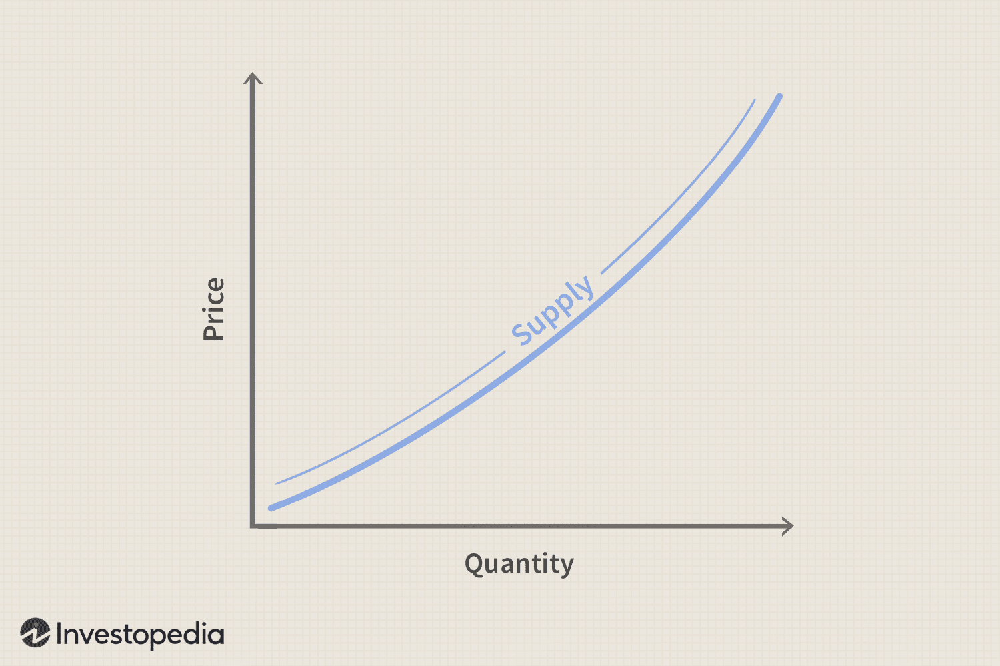

-Tumutukoy sa dami ng produkto/serbisyo na gustong ibenta ng producer sa isang partikular na presyo

Batas ng Supply: kung pababa ang Presyo, pababa din ang supply at vice versa.
Qs= Quantitative Supplied
Qd= Mamimili
Mathematikal Formula: Panustos = Pagnanais + Kagustuhan
Ceteris Paribus: totoo lang kung walang ibang factors
Supply Function (P): Qs = c + Bp
c = dami ng supply kung presyo ay 0, B = slope ng function
Supply Function (Qs): Qs= f(P)

Pagbabago sa Presyo ng kaugnay na produkto (Complementary at Substitute Products)
-Ekspektasyon ng Presyo
-Okasyon / Tradisyon
-Kalamidad
-Dali ng pagsira o pagkabulok ng isang produckto
-subsidiya o tulong mula sa pamahalaan
Ang Paglipat ng Supply Curve